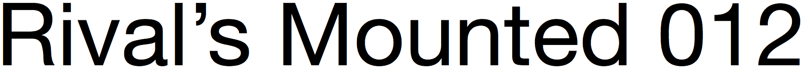
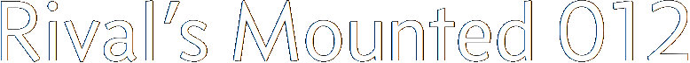
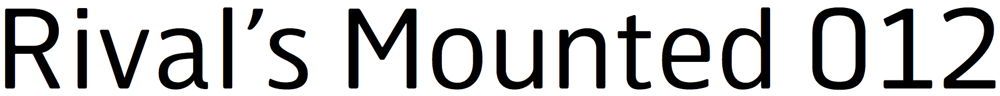

helvetica

concourse

hermes maia
neue haas grotesk
atlas
Criticizing Helvetica is one of the favorite pastimes of typographers: It’s bland. It’s overused. It’s inapt for most projects. All true.
Yet they sort of miss the point. It’s like criticizing Star Wars because the visual effects are unrealistic. Or because the dialogue is wooden. Or because the plot is pinched from The Hidden Fortress. All true as well. But so what? It’s still Star Wars. And like Star Wars, Helvetica will be with us for the foreseeable future.
Should you use Helvetica? Look, I like Helvetica. Though mostly in the rear-view mirror. Today, we have better options. For Helvetica diehards, there is Neue Haas Grotesk, a lovely revival of the original Helvetica design. Others can try a font that’s neutral without being dull, like my own Concourse or Hermes Maia, or the excellent new Atlas.
And don’t worry—no matter which alternative you choose, Helvetica will still be with us.
As I mentioned in system fonts, Arial was designed as a clone of Helvetica. Helvetica has earned its place in typographic history honestly. But Arial, only by Microsoft imposing it upon us for 20+ years as the main user-interface font in Windows. That’s the only reason you’ve heard of it. That’s the only reason you might consider using it. That’s a terrible reason. I try to keep the litmus tests to a minimum, but this must be one: you cannot create good typography with Arial.